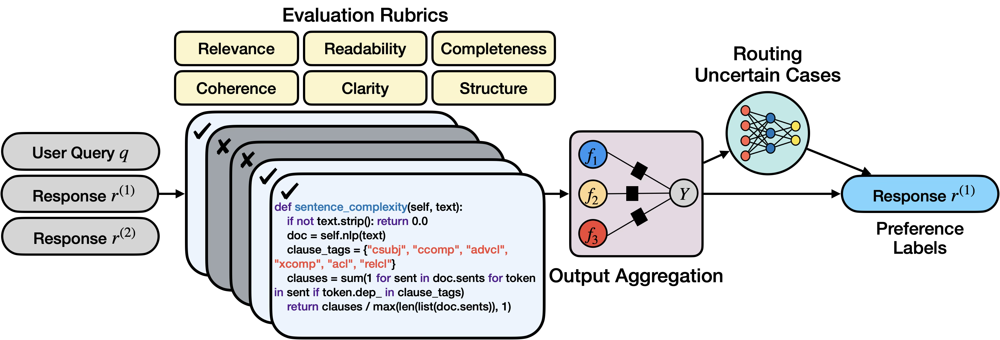
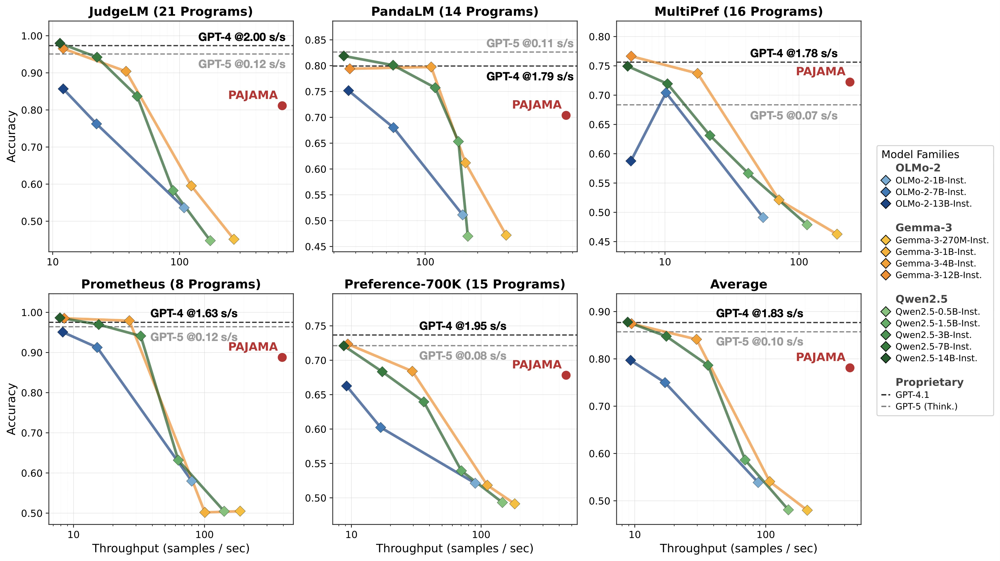
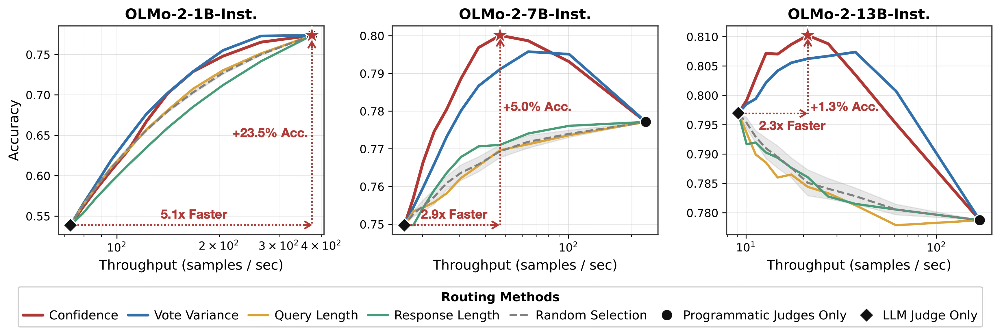
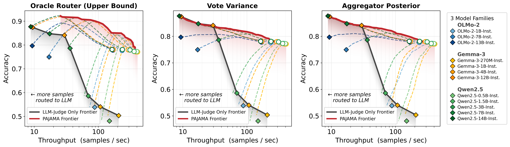

Codifying the Judge: Scalable Evaluation via Program Distillation
Challenges of Using LLM-as-a-Judge
LLM-as-a-judge has become the default for automated evaluation—but four fundamental challenges limit its scalability and reliability.
Inference Cost
Proprietary models like GPT-5 or Gemini-3-Pro make evaluation prohibitively expensive at scale. Open-weight deployments eliminate the API bill but remain expensive in latency and GPU demand.
Opaque Logic
LLMs can produce justifications, but their internal decision process is opaque: it is hard to verify whether a verdict reflects genuine reasoning or hallucination.
Systemic Bias
LLM judges favor verbosity, rich formatting, and emotionally charged language— stylistic signals that undermine reliability independent of actual response quality.
Re-inference Tax
Prompting pipelines are inflexible. Revising even one rubric criterion requires re-running inference over the entire dataset, incurring redundant cost and wasted cycles.
How do we address these? We propose a single shift: distill the judging logic into executable Python programs.
How PAJAMA Works

Given a query and two candidate responses, an LLM synthesizes a pool of programmatic judges from curated rubrics. Reliable programs are selected, their verdicts aggregated via weak supervision, and uncertain cases routed to an LLM fallback.
1 Program Synthesis
An LLM (e.g., Claude Sonnet 4.6) is prompted once to generate candidate judge programs
(we use 10 evaluation rubrics × 8 variants each). Rubrics can cover Relevance, Readability, Completeness, Coherence,
Clarity, Structure, and more. Each program is a pure Python function
judging_function(query, response) → float using only built-in libraries—no ML, no GPU.
A text-similarity filter removes near-duplicate logic to ensure committee diversity.
2 Execution & Calibration
Each program scores both responses; min-max normalization maps outputs to [0, 1]. A per-program threshold τj converts the quality-difference into a discrete vote ∈ {−1, 0, +1}, where 0 signals abstention. Thresholds are tuned on a small-size held-out validation set. Programs scoring below random chance (50%) are dropped; the top-k by validation accuracy form the final committee.
3 Aggregation via Weak Supervision
Committee votes are treated as noisy labeling functions. A Label Model (e.g., Snorkel framework) learns per-program accuracy weights from agreement and disagreement patterns, then combines votes into a single probabilistic preference label—robust to individual errors and conflicting signals.
4 Routing Uncertain Cases
When every program abstains or the aggregator's posterior is near 0.5, the pair is flagged as low-confidence and escalated to an LLM judge. Two routing signals are used: vote variance (disagreement among programs) and aggregator posterior (prediction confidence). This hybrid design trades a small fraction of LLM calls for improved accuracy on hard cases.
That is, PAJAMA is a framework for building programmatic judges that can be used to evaluate the quality of text responses. We validate PAJAMA on five preference datasets across four model families and confirm three claims: (1) programmatic judges match mid-sized LLM judges on accuracy at far higher throughput, (2) hybrid routing strictly advances the accuracy–throughput Pareto frontier, and (3) programmatic labels train competitive reward models at 45–50× lower cost than proprietary supervision.
Results
Can Programmatic Judges Match LLM Judges?
LLM judges are accurate but slow and expensive—often taking seconds per sample and costing dollars per thousand calls. We ask: can a committee of synthesized Python programs match a mid-sized LLM judge on accuracy while running orders of magnitude faster?
Setup. We evaluate on five pairwise preference datasets—JudgeLM, PandaLM, MultiPref, Prometheus, and Preference-700K—sampling 5,000 test examples per dataset with 500 held-out for calibration. Programs are synthesized once with Claude Sonnet 4.6. Baselines include proprietary judges (GPT-4.1, GPT-5 Thinking) and four open-weight model families (OLMo-2, Gemma-3, Qwen2.5), all served via vLLM at 64 concurrent requests.

Figure. Accuracy vs. throughput across five preference datasets.
- Programmatic judges reach an average accuracy of 78.11%—on par with OLMo-2-13B-Instruct and Qwen2.5-3B-Instruct—while running 47.25× faster.
- On Prometheus, just 8 programs reach 88.78%, matching OLMo-2-7B-Instruct.
- Against large variants (Qwen2.5-14B, Gemma-3-12B), programs run ~50× faster while approaching their accuracy.
Can Hybrid Evaluation Push the Pareto Frontier?
Standalone programs handle most pairs efficiently, but ambiguous cases may still benefit from an LLM. We ask: if programs route only the uncertain cases to an LLM, does the hybrid system outperform what either approach achieves alone?
Setup. We evaluate a staged policy where every pair is first scored by the program committee; low-confidence pairs—flagged by vote variance or aggregator posterior—are escalated to an LLM. Sweeping the escalation threshold traces the full hybrid accuracy–throughput curve. We compare against three baselines that route by query length, response length, or random selection.

Figure. Routing within the OLMo-2 family. Accuracy vs. throughput as the escalation threshold is swept across different routing signals. Endpoints represent pure-program (right) and pure-LLM (left) evaluation.

Figure. Hybrid evaluation pushes the Pareto frontier further across 12 LLM judges. Each dashed line traces one judge's hybrid trajectory as the threshold is swept; the red envelope is the resulting PAJAMA frontier; the gray envelope is LLM-only.
- PAJAMA-derived signals consistently dominate length-based and random routing baselines at every throughput budget.
- This leads to OLMo-2-7B-Instruct: +5.0% accuracy at 2.9× higher throughput.
- This leads to Qwen2.5-3B-Instruct: +2.6% accuracy at 2.2× higher throughput.
- Moreover, the fallback mechanism adds negligible latency overhead compared to model-based routers.
Are Programmatic Labels Good Enough for Reward Models?
LLM judges are widely used to generate preference labels for reward model training, but proprietary APIs make this expensive at scale. We ask: can programmatic labels replace proprietary LLM supervision for reward model distillation—at a fraction of the cost?
Setup. We sample 20,000 preference pairs from Prometheus and JudgeLM, relabel them with PAJAMA's programs, and fine-tune Qwen2.5-3B-Instruct under the Bradley–Terry objective. We compare against the same pipeline using original GPT-4 labels, evaluating in-domain accuracy and out-of-domain generalization on RewardBench (Chat, Chat Hard, Reasoning).
| Labeling Source | API Calls | Estimated Cost | In-domain Acc. |
RewardBench | |||
|---|---|---|---|---|---|---|---|
| Chat | Chat Hard | Reasoning | Avg. | ||||
| Trained on Prometheus Dataset | |||||||
| GPT-4 | 20,000 samples | $363.97 | 97.23 | 68.44 | 40.79 | 55.70 | 54.98 |
| PAJAMA | 80 programs (one-time) | $7.21 (50× cheaper) | 92.20 | 79.33 | 30.04 | 60.58 | 56.65 (+1.67) |
| Trained on JudgeLM Dataset | |||||||
| GPT-4 | 20,000 samples | $296.37 | 90.24 | 67.88 | 38.82 | 65.13 | 57.28 |
| PAJAMA | 80 programs (one-time) | $6.49 (45× cheaper) | 82.79 | 67.88 | 44.52 | 72.91 | 61.77 (+4.49) |
Table. Reward model distillation with PAJAMA vs. GPT-4 labels.
- In-domain, PAJAMA labels yield competitive accuracy at roughly 50× lower API cost (92.20% vs. 97.23% on Prometheus; 82.79% vs. 90.24% on JudgeLM).
- Out-of-domain on RewardBench, PAJAMA-trained models outperform GPT-4-trained ones on average: +1.67 points on Prometheus and +4.49 points on JudgeLM.
- The largest gains come from Reasoning (+4.88 on Prometheus, +7.78 on JudgeLM) and Chat (+10.89 on Prometheus), where programmatic judges encode explicit quality criteria that transfer well out-of-domain.
- Program synthesis cost is O(1)—fixed regardless of dataset size—while GPT-4 labeling scales O(n), so the cost gap widens as more pairs are labeled.
Key Contributions
①A New Evaluation Paradigm
We distill LLM judging logic into a committee of executable Python programs, replacing per-sample model inference with a one-time synthesis and fast local execution.
②The PAJAMA System
A hybrid evaluation system that synthesizes diverse programmatic judges, calibrates and aggregates their verdicts via weak supervision, then routes uncertain cases to an LLM fallback.
③Advancing the Pareto Frontier
Across four model families, PAJAMA matches strong LLMs at a fraction of the cost and pushes the accuracy–throughput Pareto frontier beyond what any LLM-only system can reach.
④Cheap, High-Quality Reward Signals
Reward models distilled from programmatic judges outperform those trained on proprietary GPT-4 labels on RewardBench, at 45–50× lower labeling cost.
Interactive Demo
PAJAMA ships with an Evaluation Studio built in Streamlit. Inspect individual judge programs, edit them, regenerate via chat, and download labeled datasets.
Citation
If you find this work useful, please cite our paper. If you use the preference datasets, also cite the original benchmark papers.
Latest Version:
@article{huang2026codifying,
title = {Codifying the Judge: Scalable Evaluation via Program Distillation},
author = {Huang, Tzu-Heng and Qiu, Shengqi and Sala, Frederic},
year = {2026}
}Preliminary Workshop Version (ICML 2025 Workshop: Programmatic Representations for Agent Learning):
@article{huang2025time,
title = {Time to Impeach LLM-as-a-Judge: Programs are the Future of Evaluation},
author = {Huang, Tzu-Heng and Vishwakarma, Harit and Sala, Frederic},
journal = {arXiv preprint arXiv:2506.10403},
year = {2025}
}